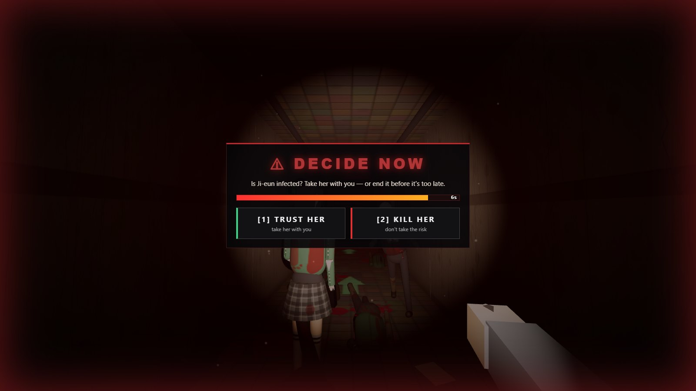
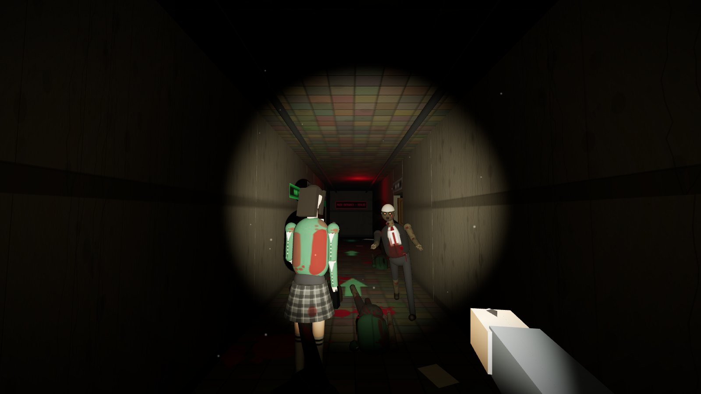

A mission chain you can't skip
24 steps across 6 floors, strictly in order. Keycards, a generator, a CCTV archive, a breaker two floors away — and deliberate back-tracking through infested halls.
Seowon High School · 23:47
Six floors. One helicopter. Midnight.
A first-person zombie survival escape game that runs in your browser. Climb a locked-down school, solve the stairwell locks in order, decide who to trust — then hold the rooftop until the helicopter lands.
Phones collected. Doors locked at 22:00. At 23:12 a scream comes from the biology lab on Floor 5. At 23:36 the school shuts itself down — gates, elevators, power.
You wake up in the entrance hall. Your friend Ji-woo is on the radio: a military helicopter reaches the rooftop at midnight, and it will only land where it sees a signal flare.
On the way up you'll meet a wounded teacher who won't be human much longer — and a girl hiding with blood on her sleeve. You'll have seven seconds to decide about her.

24 steps across 6 floors, strictly in order. Keycards, a generator, a CCTV archive, a breaker two floors away — and deliberate back-tracking through infested halls.
Every infected student limps on a different leg, drags a turned-in foot, lolls, twitches — some have an arm that no longer works. Their wounds keep bleeding onto the floor.
Ji-eun has the rooftop key. Is she bitten? Trust her or end it — the game won't tell you until after. Wait too long and they find you both.
A 24-segment threat ring shows where they move. Real recorded footsteps, heartbeat, roars and door creaks, all spatial — the heartbeat races when something is close.
Light the flare, then hold the landing circle for 30 seconds while the building empties onto the roof. Step out and the clock runs backwards.
Share a 5-letter room code and climb together (revive downed friends). Or switch to Daylight Drill: fully lit, silly helper-bots, zero scares.
Real in-game captures — nothing pre-rendered.





| W A S D | Move · Shift sprint (loud) · C sneak |
| Mouse | Look · LMB attack (hold for full-auto) |
| E | Take · open · read · use · talk |
| Q | Tap to kick boards · hold to pry, pull a breaker, light the flare |
| F G H | Flashlight · throw a flare · medkit |
| 1 2 | Crowbar · SMG |
| Space | Jump |
Best in Chrome or Edge on a laptop/desktop. Click the game once to capture the mouse. Co-op uses peer-to-peer WebRTC — strict school networks may block it (a phone hotspot fixes that).
We're collecting feedback for the next build — what scared you, where you got stuck, what felt unfair.
Or scan the poster QR code and send us a message in the class WeChat group.
AI + Innovation Design Capstone · Week 1 hackathon · Open FIESTA, Tsinghua SIGS. Built with coding agents on one shared repository, split by feature ownership.
Core gameplay & systems
Engine, building generation, stairs & physics, mission chain, combat, co-op netcode, tests, i18n.
Experience, UI & story
Survival-horror overhaul, the six-floor story, chapter comics, mission window, respawn flow.
Audio
Recorded sound effects, the heartbeat and tension system, helicopter and thunder.